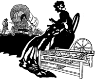

|  |
| |

Until the 1820s in America (and until the 20th Century in most of the rest of the world), 80% of all textiles and fabrics for clothing, tents, bed sheets and linens,* rugs, drapes, quilts, towels, diapers, etc.—and even our flag, “Old Glory,” were principally made from fibers of cannabis.
* The 1893-1910 editions of Encyclopaedia Britannica indicate—and in 1938, Popular Mechanics estimated—that at least half of all the material that has been called linen was not made from flax, but from cannabis. Herodotus (c. 450 B.C.E.) describes the hempen garments made by the Thracians as equal to linen in fineness and that “none but a very experienced person could tell whether they were of hemp or flax.”
For hundreds, if not thousands of years (until the 1830s), Ireland made the finest linens and Italy made the world’s finest cloth for clothing with hemp.
Although these facts have been almost forgotten, our forebears were well aware that hemp is softer than cotton, warmer than cotton, more water absorbent than cotton, has three times the tensile strength of cotton, and is many times more durable than cotton.
Were it not for the marijuana plant, the Continental Army would have frozen to death at Valley Forge.
In fact, when the patriotic, real-life, 1776 mothers of our present day blue-blood “Daughters of the American Revolution” (the D.A.R. of Boston and New England) organized “spinning bees” to clothe Washington’s soldiers, the majority of the thread was spun from hemp fibers. Were it not for the historically forgotten (or censored) and currently disparaged marijuana plant, the Continental Army would have frozen to death at Valley Forge, Pennsylvania.
The common use of hemp in the economy of the early republic was important enough to occupy the time and thoughts of our first U.S. Treasury Secretary, Alexander Hamilton, who wrote in a Treasury notice from the 1790s, “Flax and Hemp: Manufacturers of these articles have so much affinity to each other, and they are so often blended, that they may with advantage be considered in conjunction. Sailcloth should have 10% duty.…”
(Herndon, G.M., Hemp in Colonial Virginia, 1963; D.A.R. histories; Able, Ernest, Marijuana, the First 12,000 Years; also see the 1985 film Revolution with Al Pacino.)

The covered wagons went west (to Kentucky, Indiana, Illinois, Oregon, and California*) covered with sturdy hemp canvas tarpaulins,2 while ships sailed around the “Horn” to San Francisco on hemp sails and ropes.
2. Oxford English Dictionary; Encyclopaedia Brittanica, 11th edition, 1910; U.S.D.A. film, Hemp for Victory, 1942.
* The original, heavy-duty, famous Levi pants were made for the California ’ 49ers out of hempen sailcloth and rivets. This way the pockets wouldn’t rip when filled with gold panned from the sediment.3
3. Levi-Strauss & Company of San Francisco, CA, author’s personal communication with Gene McClaine, 1985.

Homespun cloth was almost always spun from fibers grown in the family hemp patch.
Homespun cloth was almost always spun, by people all over the world, from fibers grown in the “family hemp patch.” In America, this tradition lasted from the Pilgrims (1620s) until hemp’s prohibition in the 1930s.*
* In the 1930s, Congress was told by the Federal Bureau of Narcotics that many Polish-Americans still grew pot in their backyards to make their winter “long johns” and work clothes, and greeted the agents with shotguns for stealing their next year’s clothes.
The age and density of the hemp patch influences fiber quality. If a farmer wanted soft linen-quality fibers he would plant his cannabis close together.
As a rule of thumb, if you plant for medical or recreational use, you plant one seed per five square yards. When planted for seed: four to five feet apart.
(Univ. of Kentucky Agricultural Ext. leaflet, March 1943.)
One-hundred-twenty to one-hundred-eighty seeds to the square yard are planted for rough cordage or coarse cloth. Finest linen or lace is grown up to 400 plants to the square yard and harvested between 80 to 100 days.
(Farm Crop Reports, USDA international abstracts, CIBA Review 1961-62 Luigi Castellini, Milan, Italy.)
|
Fifty percent of all chemicals used in American agriculture today are used in cotton growing. Hemp needs no chemicals and has few weed of insect enemies—except for the U.S. government and the DEA. |
 |
Holy Molyillustration © 1996 Ian Worth (photographer); Holy Moly (model); photograph courtesy of the Hempstead Company, 1534 East Edinger #7, Santa Ana, CA, 92705, 1-800-284-4367. |
By the late 1820s, the new American hand cotton gins (invented by Eli Whitney in 1793) were largely replaced by European-made “industrial” looms and cotton gins (“gin” is just short for engine), because of Europe’s primary equipment-machinery-technology (tool and die making) lead over America.
For the first time, light cotton clothing could be produced at less cost than hand retting (rotting) and hand separating hemp fibers to be handspun on spinning wheels and jennys.4
4. Ye Olde Spinning Jennys and Wheels were principally used for fiber in this order: cannabis hemp, flax, wool, cotton, and so forth.
However, because of its strength, softness, warmth, and long-lasting qualities, hemp continued to be the second most used natural fiber* until the 1930s.
* In case you’re wondering, there is no THC or “high” in hemp fiber. That’s right, you can’t smoke your shirt! In fact, attempting to smoke hemp fabric—or any fabric, for that matter—could be fatal!
After the 1937 Marijuana Tax law, new DuPont “plastic fibers,” under license since 1936 from the German company I.G. Farben (patent surrenders were part of Germany’s World War I reparation payments to America), replaced natural hempen fibers. (Some 30% of I.G. Farben, under Hitler, was owned and financed by America’s DuPont.) DuPont also introduced Nylon (invented in 1935) to the market after they’d patented it in 1938.
(Colby, Jerry, DuPont Dynasties, Lyle Stewart, 1984.)
Finally, it must be noted that approximately 50% of all chemicals used in American agriculture today are used in cotton growing. Hemp needs no chemicals and has few weed or insect enemies—except for the U.S. government and the DEA.
(Cavender, Jim, Professor of Botany, Ohio University, “Authorities Examine Pot Claims,” Athens News, November 16, 1989.)
alternative versions of some pictures
the authorized on-line version of Jack Herer’s “The Emperor Wears No Clothes”
| previous page | intro | next page |
|
 |
 |
 |
 |